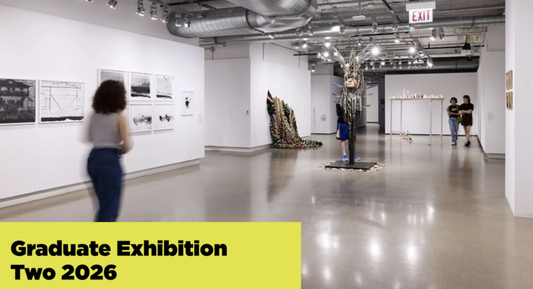

School of the Art Institute of Chicago Graduate Exhibition Two 2026
The culminating presentation of new and ambitious work by MFA, MDes, MArch, MArch-IA, and MSHP candidates in SAIC’s class of 2026. Graduate Exhibition Two is the second of two graduate exhibitions this spring.
For more information and artist profiles, you can visit: https://web.saic.edu/shows/
Hours:
Mondays–Saturdays
11:00 a.m.–6:00 p.m.
The exhibition will be open on Sunday, May 18th, during regular hours to coincide with Commencement.
The galleries are open to the public. All visitors must present a valid government ID for entrance.